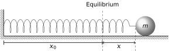
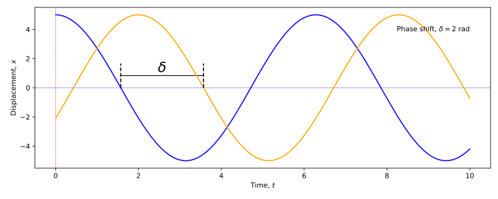
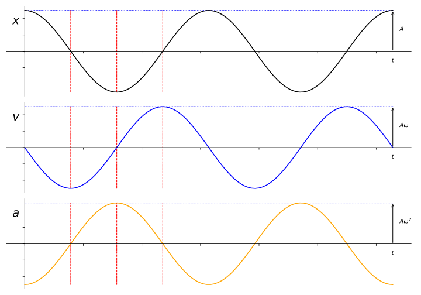
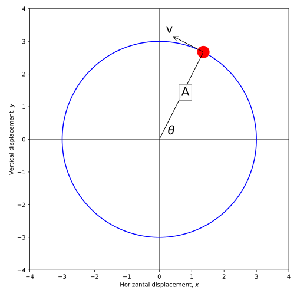
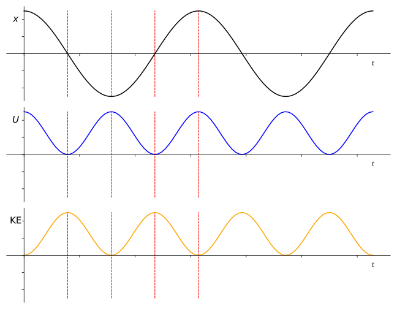
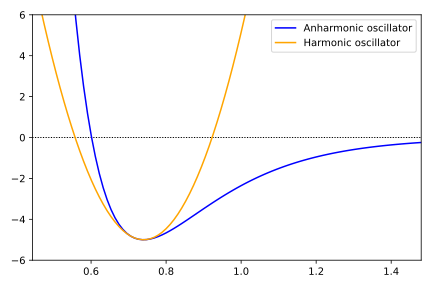
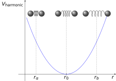
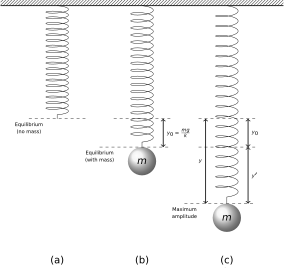

1 Simple Harmonic Motion
Simple harmonic motion (SHM) is a simple and common type of oscillatory motion. It is a model which is widely used in modelling systems due to its simplicity.
In general, an object will move under SHM where its acceleration is:
- proportional to its displacement, but
- in the opposite direction.
The force causing this acceleration is often termed a restoring force as it acts to push the object back to its starting point.
1.1 A simple example of SHM
Consider a block on a spring (Figure 1.1)
By Hooke’s law, the spring exerts a force on the block proportional to its displacement \(x\), but in the opposite direction, pushing the block back to its equilbrium position, shown mathematically in Equation 1.1:
\[F_x = -kx \tag{1.1}\]
In this example, \(F_x\) is considered a restoring force, while \(k\) is the force constant of the spring.
Applying Newton’s Second Law to this problem, we can obtain the mathematical description of the system (Equation 1.2):
\[ \begin{aligned} F_x = ma_x \\ -kx = m\frac{\textrm{d}^2 x}{\textrm{d} t^2} \end{aligned} \tag{1.2}\]
… and through rearrangement and combination with Equation 1.1 we obtain the description of how this mass will move (Equation 1.3):
\[ \frac{\textrm{d}^2 x}{\textrm{d} t^2} = -\frac{k}{m}x \tag{1.3}\]
The general form of this expression for any system can be considered as shown in Equation 1.4:
\[ \frac{\textrm{d}^2 x}{\textrm{d} t^2} = -Cx \quad\mathrm{or}\quad\ddot{x} = -Cx \tag{1.4}\]
…where \(C\) is a positive constant which depends on the system and represents a ratio of the elastic (\(k\)) and inertial (\(m\)) contributions within the system.
Key Terms
- Period: The time \(T\) for one complete oscilation back and forth (units s)
- Frequency: The reciprocal of the period; \(f = \frac{1}{T}\), units s-1 or Hz.
1.2 Positioning in SHM
SHM can be described by a general equation of motion, defining the position (\(x\)) of the oscillating mass using a cosine function (Equation 1.5):
\[ x = A \cos (\omega t + \delta) \tag{1.5}\]
The parameters in this equation are:
- \(A\): The amplitude of the oscillation
- \(\omega t + \delta\): Phase of motion
- \(\delta\): Phase constant
For any single oscillator, the time origin can always be chosen so that \(\delta = 0\). For two or more oscillators there will generally be a phase difference between them i.e. they will not always be at the same ‘zero’ position at time zero in Figure 1.2:

1.3 Velocity in SHM
To find the velocity of the oscillating mass, we can simply find the first derivative of its position with respect to time (Equation 1.6):
\[ \begin{array}{rcl} v & = & \frac{\textrm{d}x}{\textrm{d}t}\\ &=& -A \omega \sin (\omega t + \delta)\\ \end{array} \tag{1.6}\]
A quick inspection of this shows that the velocity \(v\) is maximised when \(x\) is at a minimum; i.e. as the object passes through its equilibirum position.
1.4 Acceleration in SHM
Again, to find the acceleration, we find the second derivative of its position with respect to time (Equation 1.7):
\[ \begin{array}{rcl} a & = & \frac{\textrm{d}v}{\textrm{d}t} = \frac{\textrm{d}^2 x}{\textrm{d}t^2}\\ &=& -A \omega^2 \cos (\omega t + \delta)\\ \end{array} \tag{1.7}\]
…or, to use the Newtonian “dot” notation (Equation 1.8):
\[ a = \ddot{x} = -\omega^2 x \tag{1.8}\]
If we now compare this with Equation 1.3 we can see that we have an expression for \(\omega\) for the oscillating mass \(m\) on a spring of force constant \(k\) (Equation 1.9):
\[ \begin{array}{rcl} \omega^2 &=& \frac{k}{m}\\ \omega &=& \sqrt{\frac{k}{m}} \end{array} \tag{1.9}\]
1.5 Comparing displacement, velocity and acceleration
When we now compare the displacement, velocity and acceleration we make a number of observations. Firstly, they are all sinusoidal functions; variously sine and cosine functions. However, when we overlay these we have a better indication of how they interrelate (Figure 1.3)

Some key observations
- When the displacement \(x\) is at a maximum (\(x_\textrm{max}\)), the velocity \(v\) is zero while the acceleration is at its maximum but negative with respect to displacement (\(a= -a_\textrm{max}\))
- When the displacement \(x\) is zero, the velocity \(v\) is at its maximum value (\(v = \pm v_\textrm{max}\)) and the acceleration is zero.
- The pattern repeats with each period; namely \(x_0\) (displacement at time \(t = 0\)) is equal to the displacement \(x_T\) (displacement after one period of oscillation, \(T\)), and the same for the acceleration and velocity.
- In general, \(x_t = x_{t+T}\); the displacement at time \(t\) is equal to the displacement at the time \(t\) plus one period of oscillation, \(T\).
We can directly compare the displacement, velocity and acceleration at four points in the oscillation (Table 1.1):
| Time | Displacement, \(x\) | Velocity, \(v\) | Acceleration, \(a\) |
|---|---|---|---|
| \(t = 0\) | \(x_0 = A\) | \(v_0 = 0\) | \(a_0 = -a_{\textrm{max}}\) |
| \(t = \frac{T}{4}\) | \(x_{\frac{T}{4}} = 0\) | \(v_{\frac{T}{4}} = -v_\textrm{max}\) | \(a_{\frac{T}{4}} = 0\) |
| \(t = \frac{T}{2}\) | \(x_{\frac{T}{2}} = -A\) | \(v_{\frac{T}{2}} = 0\) | \(a_{\frac{T}{2}} = a_{\textrm{max}}\) |
| \(t = \frac{3T}{4}\) | \(x_{\frac{3T}{4}} = 0\) | \(v_{\frac{3T}{4}} = v_\textrm{max}\) | \(a_{\frac{3T}{4}} = 0\) |
| \(t = T\) | \(x_T = x_0 = A\) | \(v_T = v_0 = 0\) | \(a_T = a_0 = -a_{\textrm{max}}\) |
1.6 Initial conditions
We mentioned in Section 1.5 that the displacement, velocity and acceleration expressions were based on sinusoial functions, and each function had a scaling factor \(A\) (the amplitude of the oscillation) and a phase component \(\delta\). In most problems, we wish to determine the value of these constants. In order to determine these, we establish the initial conditions of the oscillation.
In Figure 1.3 we defined our displacement at \(+A\) which set up the rest of the problem. However, we will not always be so fortunate. For a general case, we then need to be more discerning.
We can establish expressions for both the amplitude and the phase component by setting \(t = 0\) in our general expressions (Equation 1.10):
\[ \begin{array}{rclcrcl} x_t &=& A \cos (\omega t + \delta) & \rightarrow & x_0 &=& A \cos (\delta)\\ v_t &=& -A \omega \sin (\omega t + \delta)& \rightarrow & v_0 &=& -A \omega \sin ( \delta) \end{array} \tag{1.10}\] We now treat these as simultaneous equations to find \(\delta\) and \(A\) (Equation 1.11)1:
\[ \begin{array}{rcl} \tan \delta = \dfrac{\sin \delta}{\cos \delta} = -\dfrac{v_0}{\omega x_0} & \textrm{and} & A^2 = x_0^2 + \dfrac{v_0^2}{\omega^2} \end{array} \tag{1.11}\]
1.7 Frequency and angular frequency
In Section 1.5 we stated that the nature of the oscillation meant that it repeats after every oscillation; mathematically \(x(t) = x(t + T)\); the position \(x\) at time \(t\) is equal to the position at time \((t+T)\).
When we apply this to the position, we obtain the following expression:
\[ \begin{array}{rcl} x(t) &=& x(t+T) \\ A \cos (\omega t + \delta) &=& A \cos (\omega (t+T) + \delta) \\ &=& A \cos ([\omega t + \delta] + \omega T) \end{array} \]
Due to the cyclic nature of a cosine function, \(\cos (\alpha) = \cos (\alpha + 2\pi)\), this must therefore mean (Equation 1.12):
\[ \omega T = 2\pi \hspace{10pt} \textrm{or} \hspace{10pt} \omega = \frac{2\pi}{T} \tag{1.12}\]
This gives us a way to think about \(\omega\); its connection to circular motion (the clue is the \(2\pi\)). It can be thought of as the angular frequency, with units radians s-1, and an oscillation of \(2\pi\) radians corresponds to one period of oscillation.
Additionally, since the frequency of the oscillation \(f\) is the reciprocal of the period of oscillation (\(f = \frac{1}{T}\)), the angular frequency can be rewritten as \(\omega = 2\pi f\), and \(f = \frac{\omega}{2\pi}\).
For the spring system we discussed in Section 1.1, we stated that the angular frequency \(\omega = \sqrt{\frac{k}{m}}\). Therefore we can obtain an expression for the frequency of our oscillator (Equation 1.13):
\[ f = \frac{1}{T} = \frac{1}{2\pi}\sqrt{\frac{k}{m}} \tag{1.13}\] Inspection of this equation reveals the behaviour of our oscillator:
- If we have a stiffer spring (larger \(k\)), we expect the frequency \(f\) to increase,
- If we use an oscillator with larger mass (larger \(m\)), we would expect the frequency (\(f\)) to decrease.
- The frequency (and therefore period) of simple harmonic oscillation is independent of amplitude.2
1.8 SHM and circular motion
We mentioned an “angular frequency” for SHM; this would appear to suggest behaviour akin to circular motion. It is therefore worth exploring our descriptions of circular motion.
Imagine a point mass moving in a circle (Figure 1.4). For convenience, we imagine this using Cartesian \(x-y\) axes, shown in Figure 1.4.

The particle of mass \(m\) is moving in a circle of radius \(A\) with instantaneous linear velocity \(v\); the radius makes an angle \(\theta\) with the \(x\)-axis. We now look at how its position maps onto each of the axes:
- The angular velocity of the particle is \(\omega\); found via \(\frac{v}{A}\)
- We can then describe \(\theta\) in terms of \(\omega\):
- \(\theta = \omega t + \delta\) (\(\delta\) is the angle at time \(t=0\))
- The particle’s position on the \(x\)-axis is therefore found via:
- \(x = A \cos \theta = A \cos (\omega t + \delta)\)
- This corresponds with the expression for SHM for a particle moving in a linear fashion (Equation 1.5).
We can also consider how its position maps onto the \(y\)-axis:
- The position on the \(y\)-axis is found via:
- \(y = A \sin \theta = A \sin (\omega t + \delta) \equiv A \cos(\omega t + [\delta - \frac{\pi}{2}])\)
- This once again corresponds with the expression for SHM for a particle moving in a linear fashion.
- The \(y\)-component of the motion is \(\frac{\pi}{2}\) out of phase with the \(x\)-component
This illustrates that circular motion is a combination of two perpendicular SHM oscillations of the same frequency and amplitude, but a relative phase of \(\frac{\pi}{2}\).
1.9 Energy in SHM
As with all isolated systems, the total energy \(E\) of the simple harmonic oscillator is constant, however the contributions from potential energy (\(U\)) and KE vary with time.
\[ E = KE + U = \textrm{constant} \]
Let’s go back to the condition for SHM; there is a restoring force proportional to the displacement:
\[ F = -kx \]
Knowing that the force is the first derivative of the potential energy, we can therefore integrate this force expression (with respect to \(x\)) to get back to the energy statement:3
\[ \begin{array}{rcl} U &=& \int F \mathrm{d}x \\ & =& \frac{1}{2}kx^2 \hspace{10pt} [+C] \end{array} \tag{1.14}\]
However, we already have an expression for how the displacement, \(x\), varies with time (Equation 1.5); let’s now substitute this into the result from Equation 1.14:
\[ U = \frac{1}{2}kA^2 \cos^2 (\omega t + \delta) \tag{1.15}\]
We can also generate an expression for the kinetic energy; remember that kinetic energy can be found from \(\frac{1}{2}mv^2\); so we use the expression for \(v\) given in Equation 1.6:
\[ \begin{array}{rcl} KE &=& \frac{1}{2} mv^2 \\ & =& \frac{1}{2} m A^2 \omega^2 \sin^2 (\omega t + \delta) \end{array} \tag{1.16}\]
We can simplify this using Equation 1.7 for a particle on a spring, where \(\omega^2 = \frac{k}{m}\):
\[ KE = \frac{1}{2}kA^2 \sin^2 (\omega t + \delta) \tag{1.17}\]
Combining the result of Equation 1.15 and Equation 1.17 we find the result in Equation 1.18:
\[ \begin{array}{rcl} E_\textrm{total} &=& U + KE \\ & =& \frac{1}{2}kA^2 \cos^2 (\omega t + \delta) + \frac{1}{2}kA^2 \sin^2 (\omega t + \delta)\\ & =& \frac{1}{2}kA^2 \left[ \cos^2 (\omega t + \delta) + \sin^2 (\omega t + \delta)\right]\\ &=& \frac{1}{2}kA^2 \end{array} \tag{1.18}\]
This result tells us that the total energy in a simple harmonic oscillation is proportional to the square of the amplitude.

Some points to bear in mind
- \(U = U_\mathrm{max}\) at \(x = ±x_\mathrm{max}\)
- \(KE = KE_\mathrm{max}\) at \(x = 0\)
- \(U_\mathrm{average} = KE_\mathrm{average} = \frac{1}{2}E_\mathrm{total}\)
1.10 SHM in Real Systems
Textbook link: Tipler and Mosca: Ch 14.2 to 14.4
We will now go on to look at some applications of SHM in real-world systems.
1.10.1 General motion near equilibrium
A way of thinking about SHM is that it is a point mass oscillating within a potential energy field. As with any potential energy field, the force on this particle is given by the gradient of the potential energy and is directed down the potential energy slope. Mathematically, for a potential energy field, the force may be found as follows (Equation 1.19):
\[ F = - \frac{\mathrm{d}U}{\mathrm{d}r} \tag{1.19}\]
In a one-dimensional system, this is expressed as follows (Equation 1.20):
\[ F_x = - \frac{\mathrm{d}U}{\mathrm{d}x} \tag{1.20}\]
As mentioned in Section 1.1, under SHM the force is proportional to the displacement from the equilibrium position and in the opposite direction; i.e.:
\[ F_x = -kx \tag{1.21}\]
Applying the principle from Equation 1.19 we can therefore integrate this experession with respect to \(x\) to obtain the expression for our potential energy. We covered this in Section 1.9, and we found the result (Equation 1.14); remember that, due to initial conditions, the constant of integration reduces to zero).
\[ U = \frac{1}{2}kx^2 \]
Simple inspection and recall of our mathematics knowledge tells us that this simple equation represents a parabola.
Some useful points on the harmonic oscillator
- A parabolic potential energy function implies SHM and vice versa;
- For small amplitudes of oscillation, many potential energy functions may be approximated by a parabola (e.g. a pendulum, vibrating molecules)
- A system undergoing SHM is called a harmonic oscillator.
The simplicity of the simple harmonic oscillator model is what makes it such a generally useful system to consider.
1.10.2 Example: a diatomic molecule
A diatomic molecule is a useful system to consider as an example because it can be approximated to a harmonic oscillator at small displacements about the equilibrium. The potential energy curve for a vibrating diatomic molecule (in this case the H2 hydrogen molecule) is shown in Figure 1.6.

The potential of a vibrating diatomic is known as the Morse potential; the form of this is outwith this discussion, however it is useful to think that, for small displacements around the equilibrium separation the potential energy curve approximates a parabola. We can therefore re-draw our potential energy curve as such, and show this in Figure Figure 1.7).4

The equation of the parabola shown in Figure 1.7 takes the following form:
\[ U(r) = A + B(r - r_0)^2 \tag{1.22}\] …where \(A\) and \(B\) are constants relating to the molecular system under consideration, and \(r_0\) is the equilibrium bond length.
The force on the bond can then be found from the first derivative of the bond potential described in Equation 1.22:
\[ \begin{array}{rcl} F_r &=& - \dfrac{\mathrm{d}U}{\mathrm{d}r} \\ \\ &=& -2B(r-r_0)\\ \end{array} \tag{1.23}\]
Since the term \((r-r_0)\) is the displacement from the equilibrium position, we see that the force, \(F_r\) is a restoring force and is proportional to the displacement (and in the opposite direction!), telling us that the motion is SHM. In this example however, the parabolic approximation fails at larger amplitudes.
1.10.3 Example: Mass on a vertical spring
In Section 1.1 we considered a mass on a horizontal spring; there was only a single force acting on the mass (the force from the spring), however we are now considering a vertical spring and must consider the effects of gravity (Figure 1.8).

In this case we need to work through a slightly different process to find the equation of motion, chiefly because the equilibrium displacement of the mass (\(y_0\)) is different from the equilibrium position of the spring.
The equilibrium position of the mass \(y_0\) is lower than the equilibrium extension of the spring (gravity on the mass causes the spring to stretch). This is found by relating the force from the spring and the force of gravity acting on the mass (Equation 1.24):
\[ \begin{array}{rcl} \mathrm{Force~due~to~spring~extension} &=& \mathrm{Gravity~acting~on~mass}\\ k y_0 &=& mg\\ y_0 &=& \dfrac{mg}{k}\\ \end{array} \tag{1.24}\]
We now apply the Second Law of motion to obtain an expression for the acceleration on the mass due to the forces acting on it (the spring force and gravity).
\[ \begin{array}{rcl} m\ddot{y}&=& \textrm{spring force} + \textrm{gravity} \\ m\dfrac{\mathrm{d}^2 y}{\mathrm{d} t^2} &=& -ky + mg\\ \end{array} \tag{1.25}\] In this expression, \(y\) is the total extension of the spring (the extension to the mass equilibrium point, \(y_0\) plus the displacement from this point, \(y^\prime\)).
We now substitute a variable; since \(y = y_0 + y^\prime\), we substitute \(y\) for \(y^\prime\):
- \(y = y_0 + y^\prime\)
- \(y^\prime = y - y_0\)
Since \(y_0\) is a constant:
\[ \dfrac{\mathrm{d} y^\prime}{\mathrm{d} t} = \dfrac{\mathrm{d} y}{\mathrm{d} t} \hspace{10pt} \textrm{and} \hspace{10pt} \dfrac{\mathrm{d}^2 y^\prime}{\mathrm{d} t^2} = \dfrac{\mathrm{d}^2 y}{\mathrm{d} t^2} \] Replacing \(y\) for \((y_0 + y^\prime)\) in Equation 1.25, we obtain Equation 1.26:
\[ m\dfrac{\mathrm{d}^2 y^\prime}{\mathrm{d} t^2} = -k(y_0 + y^\prime) + mg \tag{1.26}\] Since \(ky_0 = mg\) (Equation 1.24), we can therefore eliminate these terms from Equation 1.26, and rewrite as Equation 1.27):
\[ m\dfrac{\mathrm{d}^2 y^\prime}{\mathrm{d} t^2} = -k y^\prime \tag{1.27}\]
This means that, in reference to Figure 1.8, we still have SHM centered on the equilibrium position of the mass. This may seem like a self-evident result, however it is useful to recognise the role of gravity; its effect is to shift the equilibrium position of the oscillation from \(y = 0\) (the equilibrium position of the spring) to \(y = y_0\) (\(y^\prime = 0\)).
Let’s now consider the energy in this system. The system already contains some elastic energy as the spring is already stretched to \(y_0\) by the gravity acting on the mass:
\[ \textrm{elastic potential energy} = \frac{1}{2}ky^2 - \frac{1}{2}ky_0^2 \] The gravitational potential energy (relative to the starting position \(y_0\)) is given by:
\[ \textrm{gravitational potential energy} = - mg(y-y_0) \] The total potential energy is therefore given by Equation 1.28:
\[ U = \frac{1}{2}ky^2 - \frac{1}{2}ky_0^2 - mg(y-y_0) \tag{1.28}\]
We can then show that the total potential energy expression in Equation 1.28 can be simplified to that shown in Equation Equation 1.29:
\[ U = \frac{1}{2} ky^{\prime 2} \tag{1.29}\] You should ensure you understand how this simplification is done; this is left as an exercise.5
Overall, the expression for the total potential energy shown in Equation 1.29 will still yield a parabola and as such the oscillation is still a simple harmonic oscillation as before.
Note that we use the trigonometric identity \(\cos^2 \alpha + \sin^2 \alpha = 1\) to find \(A\)↩︎
A caveat to this is for large amplitudes where other factors start to affect the behaviour. But this is then no longer simple harmonic motion!↩︎
The constant of integration will evaluate to zero from the starting condition \(U = 0\) at zero displacement.↩︎
Simplistically, the deviation is due to nuclear repulsion at high compression, while at large extension the bond eventually breaks - the “zero potential” point.↩︎
Yes; we know this sort of thing infuriates learners, however it is based in valid educational practice! Do give it a go. In this instance, remember that you will need to start with Equation 1.28, recall the relation of \(y\) and \(y^\prime\), substitute this into the equation, expand and cancel terms.↩︎